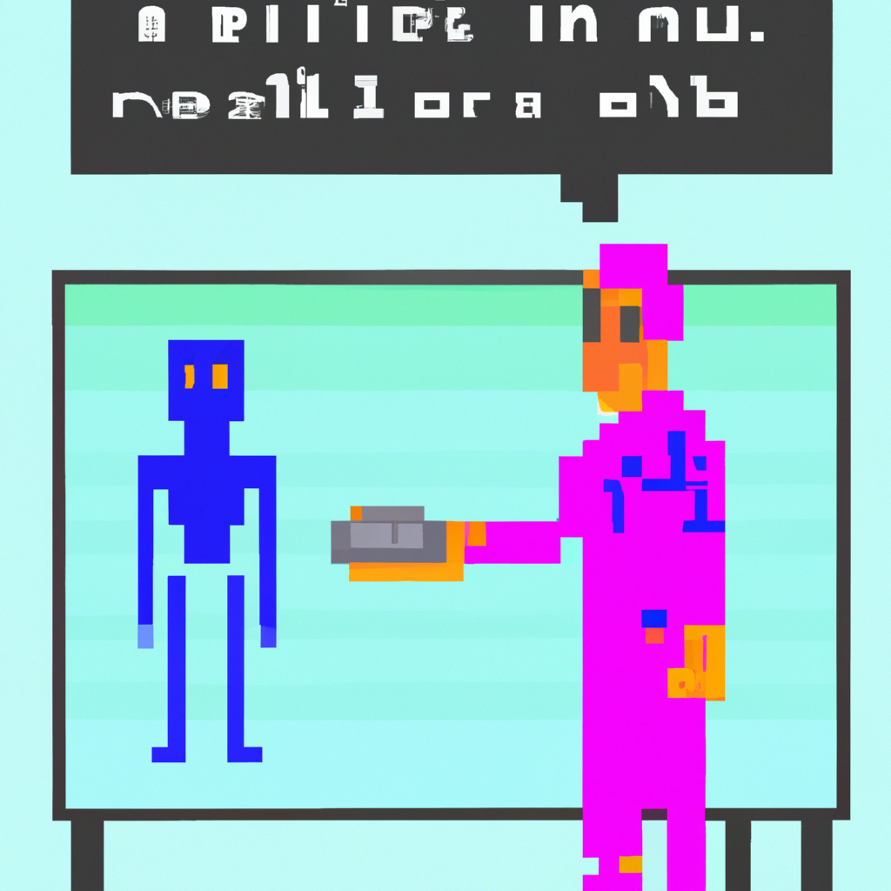

Why AI will never replace the radiologist
Artificial intelligence (AI) has been touted as a technology that can revolutionize the healthcare industry, and one of its most promising applications is in the field of radiology. AI can be used to detect and diagnose diseases from medical images, and this has led to speculation that AI may soon replace radiologists.
However, I don’t think that AI will ever completely replace radiologists. While AI can be effective at detecting and diagnosing diseases, there are several limitations it faces. First, AI systems rely on large datasets to learn how to accurately identify diseases. These datasets need to be highly accurate and comprehensive in order to provide reliable results. Achieving this accuracy is difficult, as medical images are often inconsistent and of varying quality. Additionally, AI systems can struggle to recognize rare diseases, or diseases that appear differently in different patients.
Radiologists, on the other hand, are experts in their field and have the knowledge and experience to accurately identify diseases, even those that are rare or that appear differently in different patients. They can also provide valuable context to medical images that AI systems cannot. For these reasons, AI will never completely replace radiologists.
At the same time, AI can be a powerful tool for radiologists. AI can help radiologists increase their accuracy and efficiency, and it can help them identify diseases that would otherwise have gone unnoticed. AI is also a valuable research tool that can help in the development of new diagnostic techniques. The key is for radiologists and AI to work together in order to achieve the best possible outcomes.